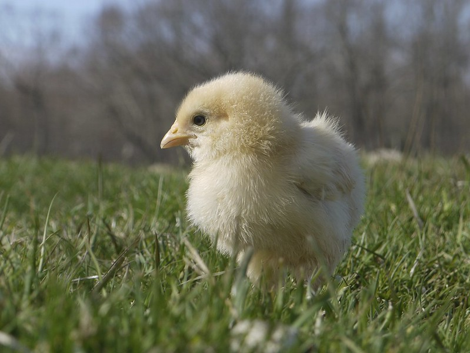

From Wikipedia, the free encyclopedia.

The chicken (Gallus domesticus) is a domesticated subspecies of the red junglefowl, with attributes of wild species such as grey and ceylon junglefowl[1] that are originally from Southeastern Asia. Rooster or cock is a term for an adult male bird, and a younger male may be called a cockerel. A male that has been castrated is a capon. An adult female bird is called a hen and a sexually immature female is called a pullet.